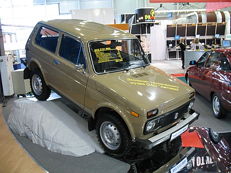

Общая информация
История модели Нива
В 1969—1970 годах главный конструктор ВАЗа В. С. Соловьёв вышел с инициативой о разработке внедорожника для жителей сельских районов. Его предложение стало результатом проработки так называемого «типажа» Минавтопрома СССР на 1971—1980 годы, на тот момент времени делегированного ИМЗ (Ижмаш). Уже были созданы прототипы АЗЛК-415 и −416 и Иж-14, однако эти автомобили не были готовы к серийному производству.
Летом 1970 года председатель Совета министров СССР Алексей Косыгин поставил перед коллективами ВАЗа, АЗЛК и Ижмаша задачу создать легковой автомобиль повышенной проходимости с комфортом массовых легковых моделей. В частности, по воспоминаниям участников встречи в ОГК (отдел главного конструктора) на ВАЗе, после показа ему металло-гипсового макета «автомобиля № 2» (люксовый вариант «Жигулей», впоследствии ВАЗ-2103) он сказал следующее:
«Работа с Fiat на этом заканчивается (так обусловлено контрактом), и дальше придётся надеяться только на себя. Так вот, первым вашим самостоятельным шагом должно быть создание автомобиля повышенной проходимости на базе „Жигулей“ для наших сельчан. А они невольно оказались обделёнными — миллионам горожан мы дадим сейчас современный легковой автомобиль, а для села он мало пригоден, особенно для нашей „глубинки“»[6].
В апреле 1971 года состоялся первый техсовет, на котором выбирали конструктивные особенности нового автомобиля. Сторонники классического подхода к проектированию предлагали вариант с рамным кузовом, зависимыми подвесками колёс, барабанными тормозами спереди и сзади. Были и более радикальные предложения, включая поперечную компоновочную схему и независимые подвески. Конструкторы начали разработку документации летом 1971 года, а уже в апреле 1972 года был изготовлен первый опытный образец[7].
Конструкторы Волжского автозавода ещё на стадии разработки перенесли на перспективную модель многие узлы и агрегаты освоенных предприятием «Жигулей». Ещё одной особенностью стал полностью «легковой» дизайн автомобиля — в автомобиле не было ничего специфически «вседорожного», «Нива» выглядела как обычная легковая машина. В конструкции широко применялись элементы дизайна и детали ВАЗ-2106, а салон оказался практически идентичным этой модели.
В 1972 году созданы первые ходовые прототипы Э-2121 (так называемые «носители агрегатов»), в 1973 году объявлено о подготовке к серийному производству.
В 1974 выпущены первые 15 предсерийных образцов, а к XXV съезду КПСС в марте 1976 года изготовлена вторая партия — ещё 50 машин[10][11].
Эти машины прошли полный цикл испытаний, в том числе пробег по Уралу и Предуралью. Для сравнения с моделями-конкурентами специалисты воспользовались британскими Land Rover и Range Rover, а также УАЗ-469. Для оценки ходовых качеств «Нивы» совместили «легковую» и «вседорожную» программы испытаний. Приказ о постановке автомобиля на конвейер подписан 31 июля 1975 года.
Первый серийный образец ВАЗ-2121 сошёл с конвейера ВАЗа 5 апреля 1977 года. Вскоре после запуска конвейера производственный план на полноприводный автомобиль увеличили с 25 000 машин в год до 50 000 автомобилей, а далее — до 70 000 единиц именно вследствие успеха на экспортных рынках.
Описание конструкции
ВАЗ-2121 (21213/21214) — легковой автомобиль повышенной проходимости (внедорожник) малого класса. Кузов несущий, трёхдверный — типа хэтчбэк, пятидверный — универсал. Трансмиссия с постоянным полным приводом, механической четырёхступенчатой коробкой передач (начиная с 21213 — пятиступенчатой), двухступенчатой раздаточной коробкой и блокируемым межосевым дифференциалом. Геометрические параметры проходимости хорошие за счёт достаточно большого дорожного просвета (220 мм), небольших свесов кузова (угол въезда 32°, съезда — 37°) и сравнительно короткой 2,2-метровой колёсной базы. На первую модель ВАЗ-2121 устанавливался двигатель ВАЗ-2121, созданный на основе двигателя ВАЗ-2106, рядный карбюраторный четырёхцилиндровый, объёмом 1580 см³. Мощность 80 л. с. при 5400 об/мин, максимальный крутящий момент 116 Н·м при 3400 об/мин. На рестайлинговую модификацию ВАЗ-21213 устанавливался карбюраторный двигатель ВАЗ-21213 с увеличенным до 1690 см³ рабочим объёмом, мощностью 81,9 л. с. при 5100 об/мин и максимальным крутящим моментом 126,1 Н·м при 3000 об/мин.
Одна из особенностей «Нивы» — использование в её конструкции крупносерийных узлов модельного ряда ВАЗ. Так, от модели ВАЗ-2106 использовался 1,6-литровый двигатель с цепным приводом ГРМ, коробка передач и редуктор заднего моста (на первых «Нивах» в редукторах мостов использовались главные передачи от ВАЗ-2101 с передаточным отношением 4,3). Тем не менее, «Нива» сразу продемонстрировала уникальную для своего класса проходимость.
В октябре 2016 года на LADA 4x4 в передние ступицы вазовцы внедрили подшипник, который не требует периодической регулировки. У автомобиля модернизирован поворотный кулак, внедрено независимое крепление редуктора переднего моста и газонаполненные амортизаторы[12][13].